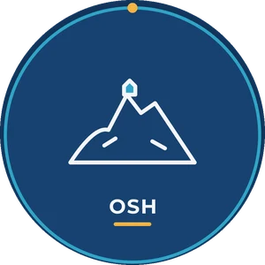
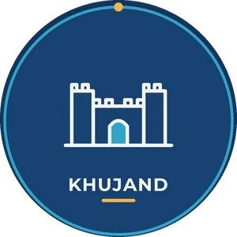
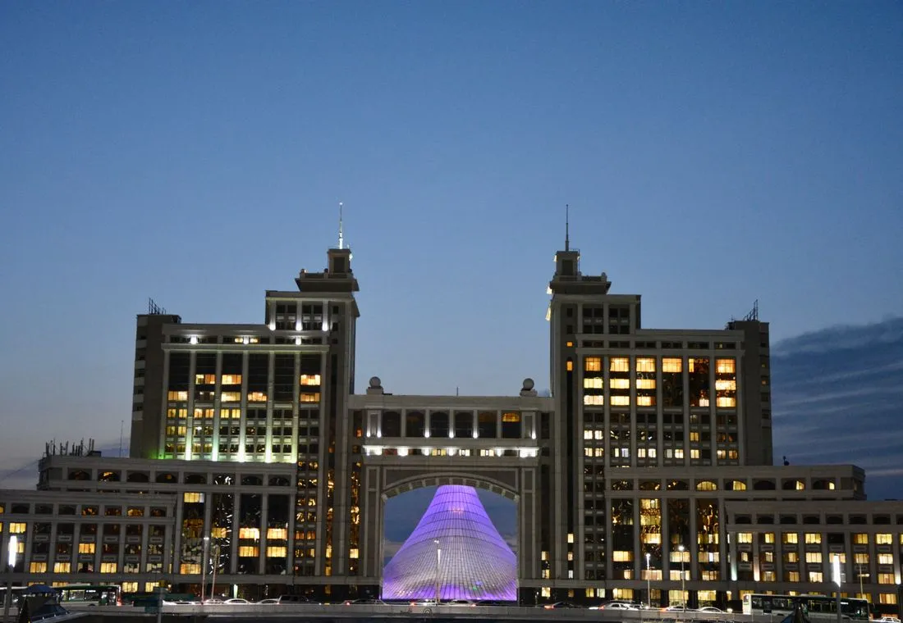
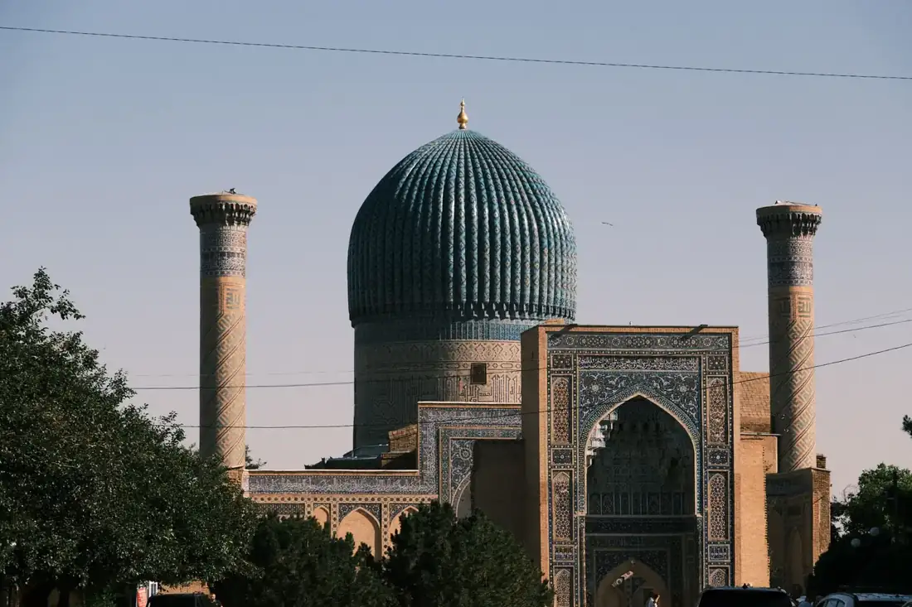
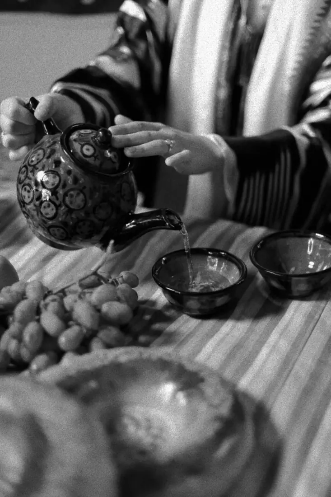

8 Tage🔒 In Vorbereitung
8 Tage🔒 In VorbereitungUZ
Klassisches Usbekistan
Chiwa · Buchara · Samarkand · Taschkent
Chiwa, Buchara, Samarkand und Taschkent — Start samstags in Chiwa
ab… pro Person
Reise ansehen →Private Reisen und Kleingruppenreisen durch Zentralasien — türkisfarbene Kuppeln, Wüstencamps, Bergseen und herzliche Gastfreundschaft. Wir organisieren alles, Sie genießen die Reise.
Verbinden Sie die Höhepunkte Zentralasiens auf einer Reise — Grenzen, Transport und Reiseleiter übernehmen wir.
Samarkand, Buchara und Chiwa — die blauen Juwelen der Seidenstraße, verbunden durch Hochgeschwindigkeitszüge.
Die Berge rund um Almaty, die roten Wände des Scharyn-Canyons und die heilige Stadt Turkistan.
Alpine Seen, Nomadenjurten, Pferde auf endlosen Weiden und die Ufer des Issyk-Kul.

Das antike Pendschikent, Chudschand am Syrdarja und der Pamir — das Dach der Welt.

Sechs bewährte Routen in jedem Land — öffnen Sie eine Reise, um Karte, Tagesprogramm und Preis zu sehen.
8 Tage🔒 In VorbereitungChiwa, Buchara, Samarkand und Taschkent — Start samstags in Chiwa
 5 Tage🔒 In Vorbereitung
5 Tage🔒 In VorbereitungDie zwei Juwelen der Seidenstraße in fünf Tagen
 10 Tage🔒 In Vorbereitung
10 Tage🔒 In VorbereitungVon Chiwa nach Samarkand mit einer Nacht in der Wüstenjurte
 7 Tage🔒 In Vorbereitung
7 Tage🔒 In VorbereitungPilgerreise zu großen Imamen und Sufi-Meistern
 15 Tage🔒 In Vorbereitung
15 Tage🔒 In VorbereitungUsbekistan, Tadschikistan, Kasachstan und Kirgisistan in 15 Tagen
 4 Tage🔒 In Vorbereitung
4 Tage🔒 In VorbereitungDie Stadt, Medeu, der Große Almaty-See und Scharyn
 5 Tage🔒 In Vorbereitung
5 Tage🔒 In VorbereitungCanyons und Bergseen im Südosten Kasachstans
 8 Tage🔒 In Vorbereitung
8 Tage🔒 In VorbereitungAlmaty, die Seen, Turkistan und Astana
 4 Tage🔒 In Vorbereitung
4 Tage🔒 In VorbereitungPilgerreise zur spirituellen Hauptstadt der Turkwelt
 4 Tage🔒 In Vorbereitung
4 Tage🔒 In VorbereitungFelsbilder, bunte Berge und eine singende Düne

4 Tage🔒 In VorbereitungDie futuristische Hauptstadt und die „kasachische Schweiz“
 7 Tage🔒 In Vorbereitung
7 Tage🔒 In VorbereitungWarmer See, rote Felsen, Adlerjäger und Canyons
 5 Tage🔒 In Vorbereitung
5 Tage🔒 In VorbereitungJurten, Pferde und der Hochsee auf 3016 m
 9 Tage🔒 In Vorbereitung
9 Tage🔒 In VorbereitungDas Beste Kirgistans in neun Tagen
 6 Tage🔒 In Vorbereitung
6 Tage🔒 In VorbereitungEin Gletschersee und die Quellen von Altyn-Arashan
 6 Tage🔒 In Vorbereitung
6 Tage🔒 In VorbereitungEine Steinkarawanserei und Nächte in Jurten
 4 Tage🔒 In Vorbereitung
4 Tage🔒 In VorbereitungEine 3000 Jahre alte Stadt und der große Walnusswald
 5 Tage🔒 In Vorbereitung
5 Tage🔒 In VorbereitungIskanderkul, die Sieben Seen und das antike Pandschakent
 10 Tage🔒 In Vorbereitung
10 Tage🔒 In VorbereitungDas „Dach der Welt“ von Duschanbe nach Osch
3 Tage🔒 In VorbereitungEin Kurztrip zu den Seen des Fan-Gebirges
8 Tage🔒 In VorbereitungDie Seidenstraßenstadt und die Seen des Fan-Gebirges
 6 Tage🔒 In Vorbereitung
6 Tage🔒 In VorbereitungHissar, Istarawschan, Chudschand und das sogdische Pandschakent
 7 Tage🔒 In Vorbereitung
7 Tage🔒 In VorbereitungZelt-Trekking zwischen smaragdgrünen Seen
Nicht das Richtige dabei? Wir planen individuelle Routen für Paare, Familien und Gruppen.
Für Alleinreisende und Paare aus aller Welt: feste Termine, englischsprachige Reiseleiter, alles organisiert.
Buchen Sie eine einzelne Leistung — Guide, Transport, Hotel, Flughafenempfang oder eSIM — ohne komplette Reise.
Wählen Sie Orte, Nächte, Hotels, Transport und Reiseleiter — Route auf der Karte und sofortige Preisschätzung.
Jetzt zusammenstellen →


Nicht nur Monumente: Pilaw aus dem riesigen Kasan, Morgen auf dem Basar und Tee mit neuen Freunden.




Unser Team lebt in Usbekistan und kennt jede Gasse, jeden Guide und jeden Geheimtipp.
Hotels, Züge, Transfers, Reiseleiter und Eintritte — in einem klaren Paket.
Halal-Essen, Zeit für Gebete und ein entspanntes Tempo für Familien.
Englisch- und russischsprachige Guides; weitere Sprachen auf Anfrage.
Keine versteckten Kosten — Sie sehen vor der Buchung, was enthalten ist.
Ein echter Ansprechpartner per WhatsApp oder Telegram während der ganzen Reise.
In 2,5 Jahren hat das Team von Moviy Travel Reisen für mehr als 10.000 Reisende organisiert. Moviy Nomad bringt dasselbe Team, dieselben Guides und Fahrer zu Gästen aus aller Welt — ein lizenzierter Reiseveranstalter (DMC) für Usbekistan: Chiwa, Buchara, Samarkand, Taschkent und mehr.
✓Lizenzierter Reiseveranstalter — Tourismuskomitee der Republik Usbekistan, Lizenz Nr. 887333
Unsere Reisen auf Instagram: @moviy_travel58.000 Follower · 600+ Beiträge mit echten Reisen→Teilen Sie uns Reisedaten, Gruppengröße und Wünsche per WhatsApp oder Telegram mit.
Wir erstellen ein Programm Tag für Tag mit einem klaren Preis für Ihre Gruppe.
Wir holen Sie am Flughafen ab und kümmern uns um alles Weitere.
Echte Nachrichten aus dem Gruppenchat unserer Reisenden, aus dem Usbekischen übersetzt.
“Danke für all eure Mühe und Fürsorge. Ich habe mir vorgenommen, einmal im Jahr zu reisen – mit euch, zusammen mit Freunden und Familie.”
“Ausgezeichneter Service: Unser Fahrer Nodirbek behandelte alle wie Familie, und die lange Fahrt fühlte sich gar nicht lang an. Wer noch überlegt – einfach fahren, ihr werdet es nicht bereuen.”
“Ich war mit meinen Eltern dort, und es hat ihnen so gefallen, dass wir schon das nächste Jahr planen. Anfangs zögerte ich – es gibt so viele Reisefirmen –, aber es war wirklich großartig.”
“Es war noch besser als erwartet. 500 Menschen zusammenzubringen ist keine Kleinigkeit. Bitte organisiert mehr solcher Reisen!”
“Die letzte Woche war für mich wirklich unvergesslich – vielleicht, weil es meine erste Reise war. Ich kam mit wunderbaren Eindrücken und Erinnerungen an tolle Menschen zurück.”
“Vielen Dank an Ilyosbek und sein Team – sie haben ehrlich gearbeitet, damit wir uns erholen konnten. In der Gruppe haben wir viele neue Freunde gefunden.”
Fotos und Eindrücke unserer Reisenden. Mit uns gereist? Teilen Sie Ihre!
Noch keine Geschichten – seien Sie die/der Erste.
Bürger vieler Länder können Usbekistan, Kasachstan und Kirgisistan visumfrei oder mit einem einfachen E-Visum besuchen. Nennen Sie uns Ihr Passland — wir prüfen die aktuellen Regeln für Sie.
Frühling (April–Juni) und Herbst (September–Oktober) sind ideal für die Städte. Der Sommer ist die Saison für Berge und Seen in Kirgisistan und Tadschikistan.
Ja. Wir planen Privatreisen für Paare und Familien sowie Gruppenreisen und Programme für Reiseveranstalter.
Die meisten Speisen in der Region sind halal. Auf Wunsch planen wir das Programm um Gebetszeiten und Besuche heiliger Stätten.
Schreiben Sie uns per WhatsApp oder Telegram. Nach Ihrer Zustimmung zum Programm bestätigen wir die Buchung und senden die Zahlungsdetails.
Ja. Wir bieten Incoming-Service und Partnerpreise für Agenturen und Gruppen.
Wählen Sie den bequemsten Weg — wir antworten mit Ideen, Programm und Preis.
+998 99 980 42 14 · Safina Qozoqboyeva